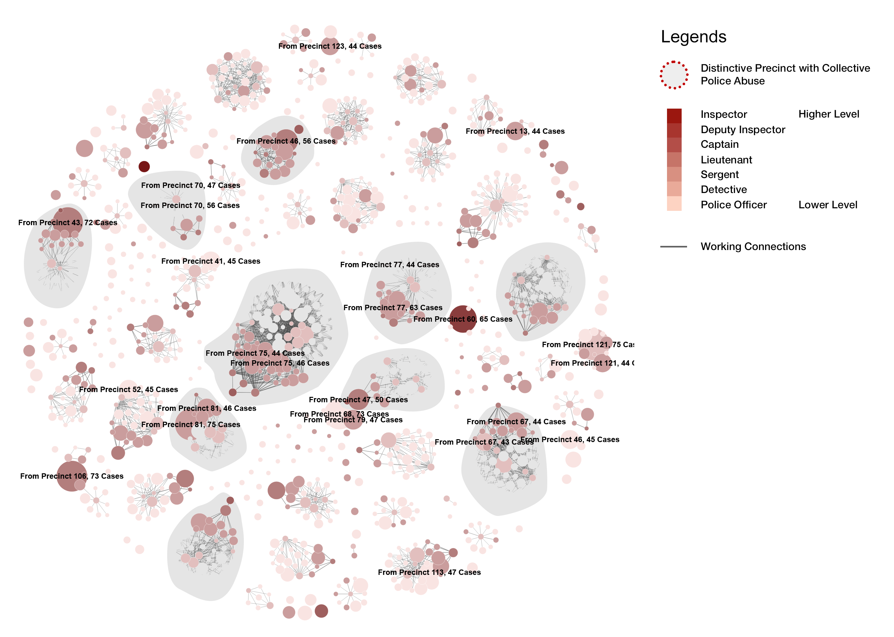
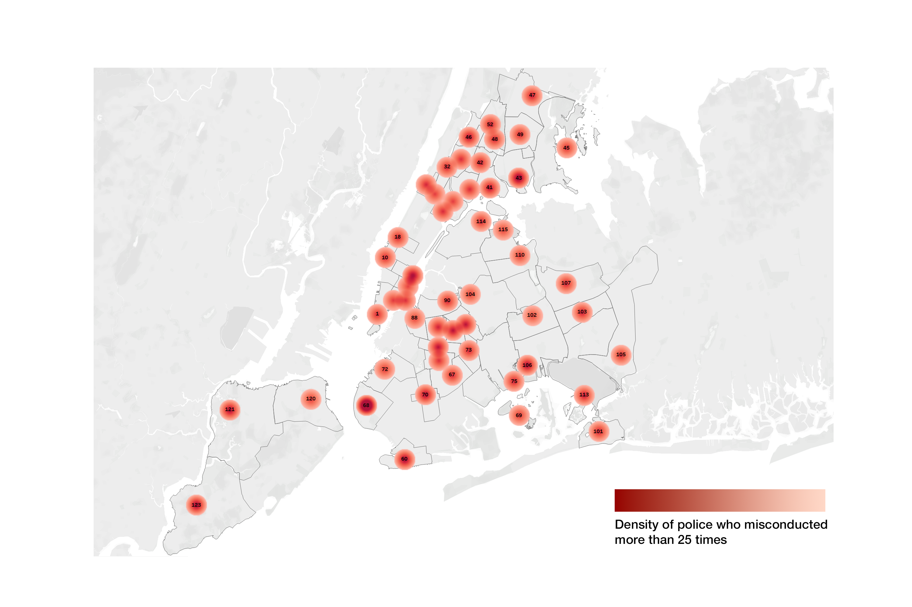
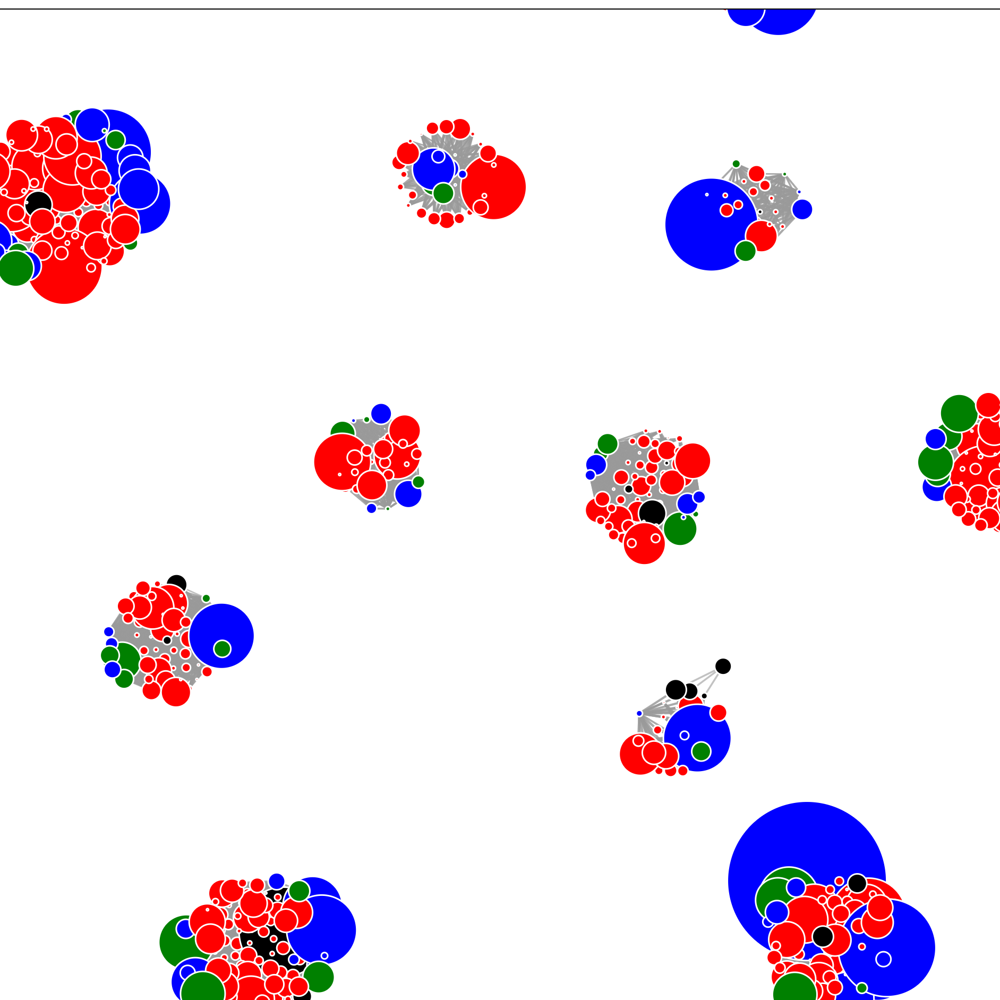

Assignment 4
Persuasive or Deceptive Visualization?
Jin Gao — gaojin@mit.edu
Proposition: Is Police Misconduct Collective or Individual?
The New York police system is a vast interpersonal network with
complex social relationships. In the process of law enforcement, the
role played by the police is not merely individual but reflects
collective decision-making.
Based on the given data, I am interested in exploring:
Is there a correlation between police interpersonal relationships and
social networks and their misconduct?
Do more experienced police officers have a higher common rate of
misconduct?
In neighboring jurisdictions, where police social connections are
stronger, is there a higher rate of collective misconduct?
Can we use Persuasive and Deceptive Visualization to express conflicting
viewpoints, namely:
New York police misconduct is collective, with some police misconduct
being contagious, meaning some areas' police have a higher rate of
misconduct, while other "cleaner" police groups are not inclined to
misconduct.
New York police misconduct is individual, their decisions and the
society they are in are unrelated.
Background Information
Intergrated to understand the data
The Hierarchy of the New York Police System.
This diagram provides a detailed view of the organizational structure
within the NYPD. It is critical for us to understand the hierarchy
between officers.
Linking geographical data to New York Police Precincts provides an
intuitive visualization that relates directly to urban spaces, offering
a new layer of insight into the spatial distribution of police
activities and complaints.
Here I collected some existing figure and my new figures showing the
general picture of the data
Case Study 1: Analysis of Complaints in Major US
Cities. This case study highlights that a small share of US police
officers are responsible for a third of complaints in large cities.
This detailed analysis reveals significant disparities in police conduct
across major urban areas, prompting discussions on accountability and
reform.
Reference:
Reddit
- DataIsBeautifulCase Study 2: Average Time an NYPD Complaint Remains
Open. This visualization offers insights into the resolution timeline
for complaints filed against NYPD officers.
The study provides a critical examination of the procedural delays in
addressing complaints, highlighting areas for improvement in police
accountability mechanisms.
Reference:
Reddit
- DataIsBeautiful
Further examinations reveal consistent patterns in the average time an
NYPD complaint remains open, underscoring systemic issues in complaint
resolution processes.
Persuasive Drawings

The Police Misconduct is a Collective Practice Influenced by Their Surroundings : a Drawing
Highlighting Dinstive Precinct Social Networks
Click here for the animated version
Design Decisions and Rationale:
Disjointed force charts can effectively depict complex networks with numerous nodes and connections,
which is suitable for representing the intricate relationships within a police department. It allows
the viewer to see how cases are distributed across different precincts without becoming overwhelmed
by the details of each connection.
Visualization of Collective Behavior: By clustering cases around precincts, the design underscores
the concept that misconduct is not an isolated incident but a collective behavior that can be
influenced by an officer's immediate environment and culture within their precinct.
Highliggting of Problematic Precincts: Circles with a distinctive outline could signify precincts
with a higher number of cases, thus drawing attention to potential hotspots of misconduct and
suggesting a need for targeted reforms or interventions.
Deceptive Drawing

The Police Misconduct is an Individual Practice Across New York, it's not directly influenced by
policeman's work social networks in particular precincts
Design Decisions and Rationale:
Deceptive Positions: In this deceptive chart, I intentionally used a combination of maps and dots to
show that the geographic locations of the misconduct officers are widely separated. This changes the
scale from a focus on the social network of a particular police station, as in the previous chart,
to the larger scale of the entire city. The audience will easily notice that each precinct has some
misconduct behavior, and the distribution is relatively even.
Deceptive Color Scale: The color scale of this chart has been intentionally adjusted to shades of
light and dark red that are difficult to distinguish, and the numerical changes have little effect
on the color. This treatment blurs the range of variation in misconduct behavior, leading people to
easily conclude that "every precinct has misconduct," so this may not be related to the social
atmosphere of a few specific precincts.
Deceptive Average Numbers: The depth of color shown here is derived from the averaged Total Abuse
Count. This treatment diminishes some extreme values, making it not easy to notice precincts with
very high collective misconduct numbers. Such processing leads people to mistakenly believe that the
responsibility for misconduct does not lie with the police department, but is widespread in every
corner of New York City, and the frequency of occurrence is about the same. This cleverly shifts the
blame from the police group itself to the citizens of New York and the complainants distributed
everywhere.
Data Transformation:
Step1: extract core data related to social network and police's information
1. Retain unique_mos_id for further data linkage (vlookup) usage
2. Transform each person's case into one line, with catagories
We found that the fedo_type has four catagories : Abuse of Authority, Discourtesy, Offensive Language,
Force. We can pivot the data into one line as an attribute of the person.
import pandas as pd
# Load the uploaded CSV file
file_path = "process1.csv"
data = pd.read_csv(file_path)
fado_types = ["Abuse of Authority", "Discourtesy", "Offensive Language", "Force"]
# Calculate the most common precinct and rank_incident for each Full Name
data["precinct"] = data.groupby("full_name")["precinct"].transform(
lambda x: x.mode()[0]
)
data["rank_incident"] = data.groupby("full_name")["rank_incident"].transform(
lambda x: x.mode()[0]
)
data["shield_no"] = data.groupby("full_name")["shield_no"].transform(
lambda x: x.mode()[0]
)
# Now we'll pivot the data again with this simplification
simplified_data = pd.DataFrame()
for name, group in data.groupby("full_name"):
record = {
"full_name": name,
"shield_no": group["shield_no"].iloc[0], # Most common precinct
"precinct": group["precinct"].iloc[0], # Most common precinct
"rank_incident": group["rank_incident"].iloc[0], # Most common rank_incident
"mos_age_list": group["mos_age_incident"].unique().tolist(),
}
# For each fado type, compile IDs and counts
for fado_type in fado_types:
fado_group = group[group["fado_type"] == fado_type]
record[f"{fado_type}_ids"] = fado_group["unique_mos_id"].tolist()
record[f"{fado_type}_count"] = len(fado_group)
record_df = pd.DataFrame([record])
simplified_data = pd.concat([simplified_data, record_df], ignore_index=True)
# Rename columns to match the requested format more closely
simplified_data.columns = simplified_data.columns.str.replace(" ", "_").str.replace(
"of_Authority", "of_Authority"
)
# Save the simplified DataFrame to a new CSV file
output_file_path_simplified = "pivoted_data.csv"
simplified_data.to_csv(output_file_path_simplified, index=False)
output_file_path_simplified
Step1 Result: pivoted data
Step2: ranking and grouping accoring to its precient number and rank_indicent.
After removing zero data and extreme data(we have an officer withprecinct 1000!), we get a cleaner table
with police officer's name, their beloning precient, their rank and their total abuse count.
Step3: Small scale test for disjoint graph visualization
Adjusted Data Structure for our disjoint forced graph
Step4: Calculating the social network according to d3.js's input data structure
Now we have a cleaned data with the key information we want. We need to predict their social network
using their rank and precinct
According to the background knowledge mentioned at the beginning, the rank of the police officers is:
We then write a script to transform the csv file to our desired json format, and create the link using
their connection hierarchy

Our first attempt on visualization is ok but not optimal, because we indluded too many unnecessary
data and connection. We will then change the logic following a strict hierarchy and remove unnessary
data.
import csv
import json
# Your connections logic
connection_logic = [
{
"role": "Inspector",
"connections": [
{"to": "Deputy Inspector", "weight": 10},
],
},
{
"role": "Deputy Inspector",
"connections": [
{"to": "Captain", "weight": 8},
],
},
{
"role": "Captain",
"connections": [
{"to": "Lieutenant", "weight": 6},
],
},
{
"role": "Lieutenant",
"connections": [
{"to": "Sergeant", "weight": 4},
],
},
{
"role": "Sergeant",
"connections": [
{"to": "Detective", "weight": 2},
],
},
{
"role": "Detective",
"connections": [
{"to": "Police Officer", "weight": 1},
],
},
{
"role": "Police Officer",
"connections": [],
},
]
# Transform the connection logic into a more accessible format
connections_map = {item["role"]: item["connections"] for item in connection_logic}
# Step 2: Reading from the CSV file and processing the data
nodes = []
links = [] # Initialized to generate meaningful links based on role connections
# Assuming the path is updated to the correct CSV location
csv_file_path = "process2_morethan25.csv"
# Read the CSV data, ensuring correct handling of delimiters and column headers
# Read the CSV data, converting officers to a list for reusability
with open(csv_file_path, mode="r", encoding="utf-8-sig") as file:
reader = csv.DictReader(file)
officers = list(reader) # Convert to a list to iterate multiple times
# Generate nodes from officers
for officer in officers:
# skip Total_Abuse_count > 3 case
nodes.append(
{
"id": officer["full_name"],
"total_abuse_count": int(officer["Total_Abuse_count"]),
"rank_incident": officer["rank_incident"],
"precinct": int(officer["precinct"]),
}
)
# Generate links based on precinct and role connections
for officer in officers:
officer_role = officer["rank_incident"]
officer_precinct = int(officer["precinct"])
for connection in connections_map.get(officer_role, []):
target_role = connection["to"]
weight = connection["weight"]
# Find officers in the same precinct with the target role
for target_officer in [
o
for o in officers
if int(o["precinct"]) == officer_precinct
and o["rank_incident"] == target_role
]:
links.append(
{
"source": officer["full_name"],
"target": target_officer["full_name"],
"value": weight,
}
)
# Step 3: Writing the processed data to a JSON file
json_data = {"nodes": nodes, "links": links}
json_file_path = "process2_processed2-25.json"
with open(json_file_path, "w") as json_file:
json.dump(json_data, json_file, indent=4)
json_file_path
Final Reflection
Through the analysis of police misconduct data, the project critically evaluates how data
visualization techniques can be employed to shape narratives and influence perceptions.
The exploration of whether police misconduct in New York is a collective or individual phenomenon
highlights the power of visualization in framing social issues. By employing both persuasive and
deceptive visualization strategies, the project demonstrates how data, when presented selectively or
with particular design choices, can lead to vastly different interpretations. The persuasive
visualization suggesting a collective nature of misconduct prompts considerations of systemic issues
within the NYPD, while the deceptive visualization portraying misconduct as an individualized
problem shifts the focus away from structural reforms.
The process of data transformation and visualization design underscores the meticulous attention to
detail required in data science. Through the cleaning, pivoting, and mapping of data, alongside the
thoughtful consideration of design elements such as color scales and positional arrangements, the
project illustrates the complexity behind effective and ethical data visualization practices.
Furthermore, the project raises important questions about accountability, transparency, and the role
of data in public discourse. It invites a broader discussion on the ethics of data representation
and the responsibilities of data scientists in ensuring that their work does not mislead or
manipulate but rather informs and enlightens.
In conclusion, the project serves as a compelling case study on the dual potential of data
visualization to both clarify and cloud the truth. It highlights the necessity for critical literacy
in interpreting visual data and calls for a balanced approach that acknowledges the nuances and
complexities of social phenomena like police misconduct. As we move forward, let us be guided by a
commitment to integrity, transparency, and the pursuit of justice in our engagement with data and
its many interpretations.